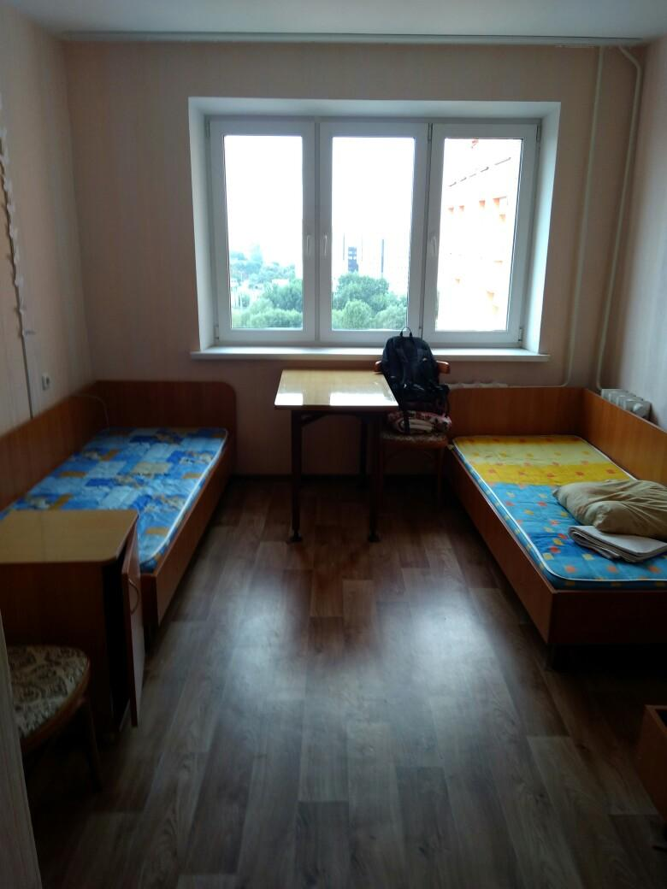
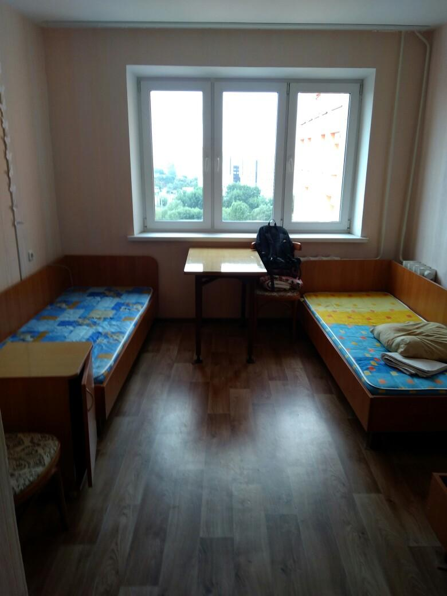

Общежитие №5 УО БГТУ (ул. Белорусская 21) введено в строй в 1978 г. В течение 2011-13 гг. в общежитии произведена тепловая реабилитация и модернизация здания, без отселения студентов.
Общежитие 15-этажное, блочного типа — 212 жилых блоков (424 комнаты). В настоящее время здесь проживает 1200 студентов, из них иностранцев — 130 человека (граждане Туркменистана, Таджикистана, Конго, Китая, Судана, Туниса).
Заведующая общежитием Толкач Зоя Евгеньевна
образование — высшее, стаж работы в должности — 16 лет
Комендант Сыроежко Татьяна Михайловна
образование — высшее, стаж работы в должности — 9 лет
Воспитатели:
Верещак Елена Викторовна, образование — высшее, стаж работы в должности — 11 лет.
Карпинская Алла Ивановна, образование — высшее, стаж работы в должности — 3 года.
Бескровная Валентина Владимировна, образование — высшее, стаж работы в должности — 1 год.
Дымковец Людмила Ивановна, образование – высшее, стаж работы в должности – 1 год.
 
